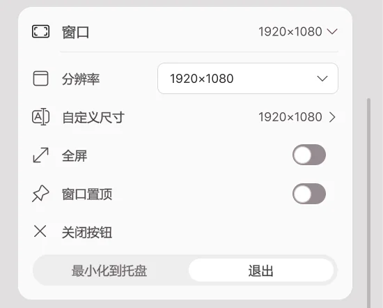
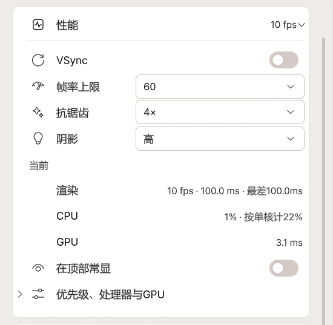
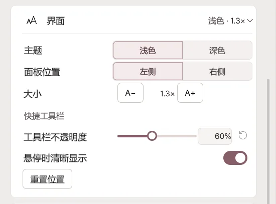
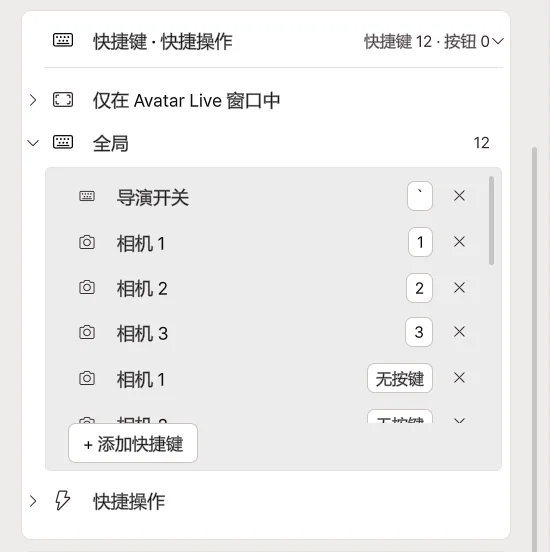
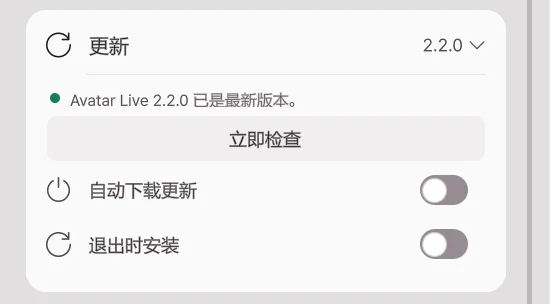
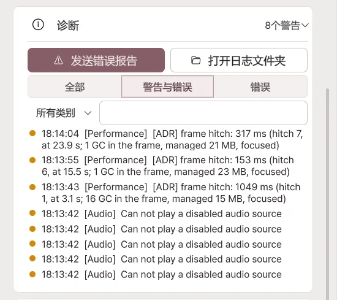
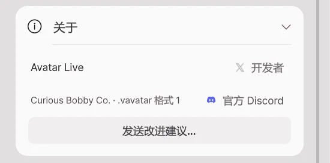

设置
设置窗口、性能、语言、快捷键和程序管理。
窗

| 项目 | 变化的内容 |
|---|---|
| 窗口大小 | 程序在我的显示器上占用的大小。 |
| 全屏 | 将程序显示为全屏。 |
| 始终在最上层 | 显示在其他程序之上 |
| 关闭窗口 | 决定按 X 键时是退出还是隐藏到托盘。 |
输出分辨率在输出图片中单独设定。
性能

- FPS限制：提高会更流畅，但增加电脑负担。降低则可减少电力消耗。
- 画质：提高后细节更清晰，但显卡负担会增加。
- 阴影：关闭后会变轻，但头发、下巴下方等的阴影会减少。
- 后期处理：对于沉重的效果，可以在相机效果中一个一个地减少。
语言与屏幕大小

在语言中选择韩语·English·日本語·简体中文。在界面中更改主题·面板位置·字体大小。如果字体太小，请提高界面缩放比例。
快捷键

- 点击添加快捷键。
- 选择要执行的操作。
- 指定要使用的按键组合。
- 表情·切换可以选择是在按下时应用，还是保持到再次按下为止。
全局快捷键即使在游戏前也能使用。请选择不会与其他应用常用键冲突的快捷键。
设置搜索
在顶部放大镜中输入要查找的设置名称，例如 AFK、镜像、Spout2、语言。点击结果即可移至相应菜单并展开卡片。
更新

| 按钮·项目 | 所做的事情 |
|---|---|
| 立即检查 | 检查是否有新版本。 |
| 下载 | 接收更新文件。 |
| 自动下载 | 打开后可以提前接收新更新。 |
| 重新启动以安装 | 重新启动程序以应用更新。 |
| 关闭时安装 | 将在关闭程序时收到的更新应用。 |
启动时会检查一次新版本。即使关闭自动下载，也可能显示更新通知。
许可证与诊断

- 输入其他代码：许可证代码、Pro 升级、DLC 房间包的 BOOTH 订单号都在这里输入。DLC 订单不会更改当前许可证。
- 发送错误报告：发送问题说明和诊断资料。实际发送在用户选择时进行。正在使用直播联动时，连接状态和最近的事件也会包含在内。详细内容请查看直播联动无法使用时。
- 发送改进建议：发送希望的功能或使用中的不便之处。
- 打开日志文件夹：打开含有诊断日志的文件夹。
关于

在设置 → 关于中查看 .vavatar 格式版本和开发者链接。可以通过官方 Discord 链接获取最新消息并提问，也可以用发送改进建议告诉我们想要的功能。